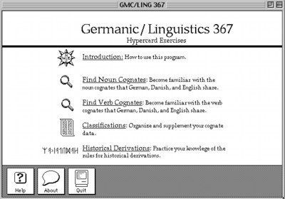

GMC by Jim Witte is licensed under a Creative Commons Attribution-NonCommercial-ShareAlike 4.0 International License.
Please contact Jim Witte (jim@thunderingbison.com) with questions or comments about this website. Exercise content based on courseware I wrote for Prof. Antonsen, GMC 367, University of Illinois Urbana-Champaign in 1995. All errors and typos are mine.
Jim Witte on the web: www.jimwitte.com
Dedicated in grateful memory to Prof. Antonsen.
